每个 Agent 的模型，一处搞定。
magpie 让每个 Agent 都能用上每一个模型。供应商只需添加一次——DeepSeek、Kimi、GLM、Qwen、OpenRouter、Ollama，或你已经在付费的 Claude 和 ChatGPT 订阅——然后在 Codex、Claude Code、Gemini CLI 或任何 Agent 里一键选用。
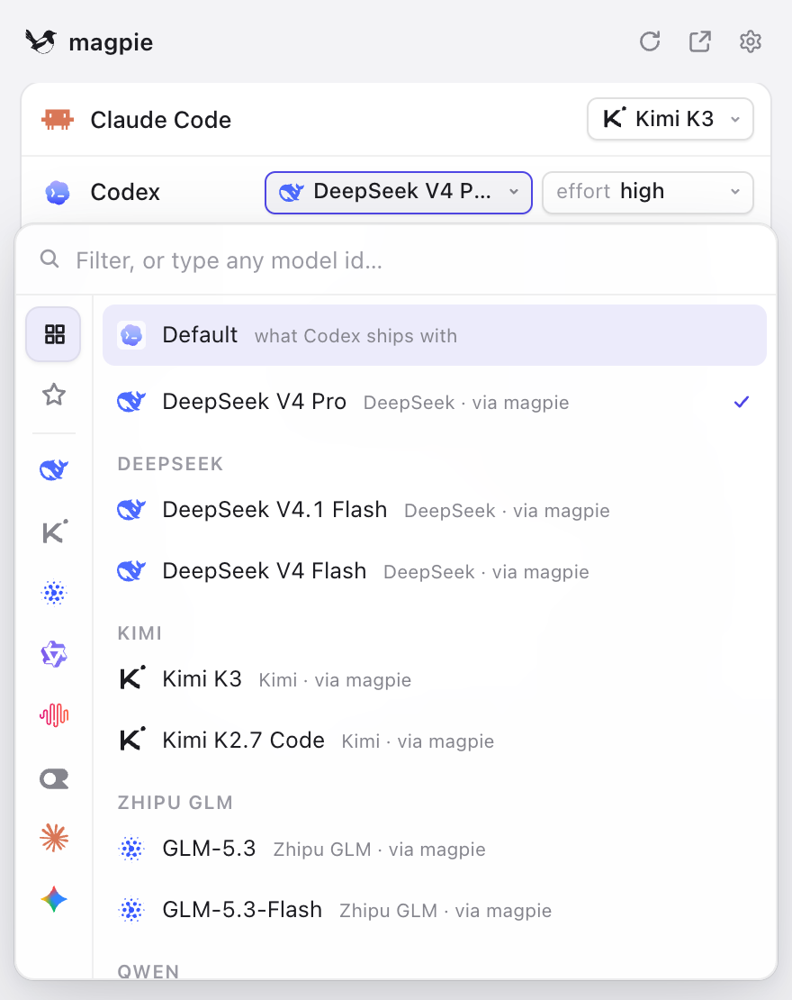
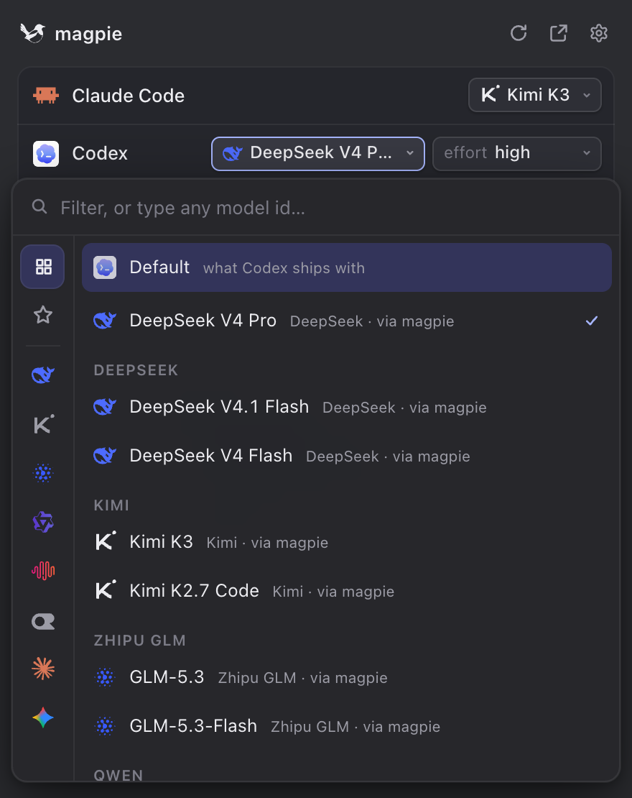
支持的 Agent
 Claude Code
Claude Code Codex
Codex Gemini CLI
Gemini CLI OpenCode
OpenCode- MiMo Code
- DevEco Code
 Pi
Pi Goose
Goose- Cursor CLI
 Copilot CLI
Copilot CLI- VS Code
- Crush
 DeepSeek Harness
DeepSeek Harness- Command Code
- fx
- omp
 OmO
OmO Devin
Devin- Hermes Agent
- Mister Morph
- Kimi Code
- Muse Code
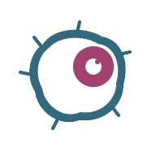
Empryo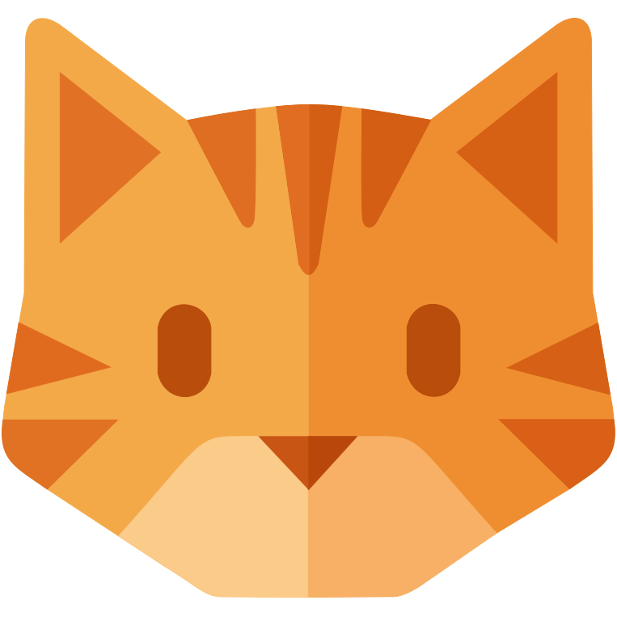
nanobot- miniQ
- Paimon
 MiniMax Code
MiniMax Code- Craft Agents
- Tuanjie Cowork
- Droid
 Grok Build
Grok Build- ZCode
- OpenHanako
- AtomCode
- Open Code Review
- Snow CLI
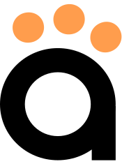
QwenPaw- Alma
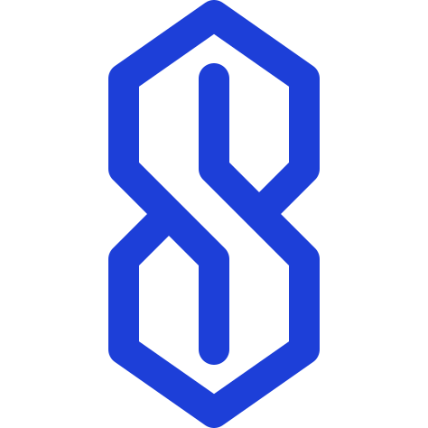
Shelley
支持的模型
- DeepSeek
- Kimi
 GLM
GLM Qwen
Qwen- MiniMax
 Claude
Claude OpenAI
OpenAI Gemini
Gemini Mistral
Mistral- xAI
 Groq
Groq OpenRouter
OpenRouter- AiHubMix
 Ollama
Ollama
工作原理
一个网关，通吃所有 API。
Codex 只认 OpenAI Responses，Claude Code 只认 Anthropic Messages。magpie 在你的电脑上运行一个网关，这些协议它都会说，并在两个方向上互相转换——流式输出、工具调用和推理过程都不落下——于是任何 Agent 都能用任何厂商的模型。
你的 Agent
- CodexResponses
- Claude CodeMessages
- Gemini CLIGemini
- OpenCodeChat
- GooseChat
127.0.0.1:3425
- OpenAI Chat · Responses
- Anthropic Messages
- Google Gemini
任意供应商
- DeepSeek
- Kimi
- GLM
- 你的 Claude 订阅
- 你的 ChatGPT 订阅
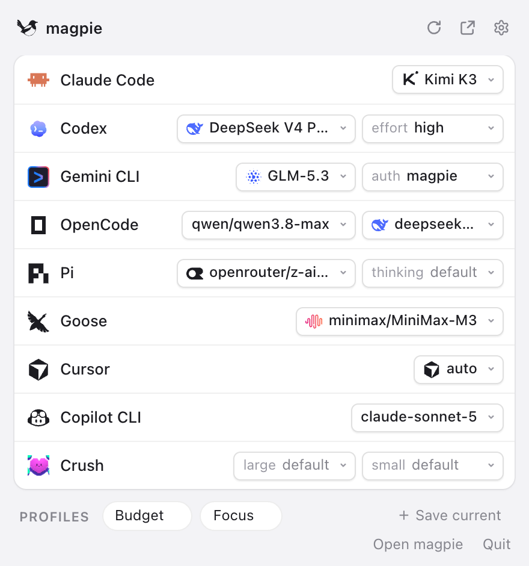
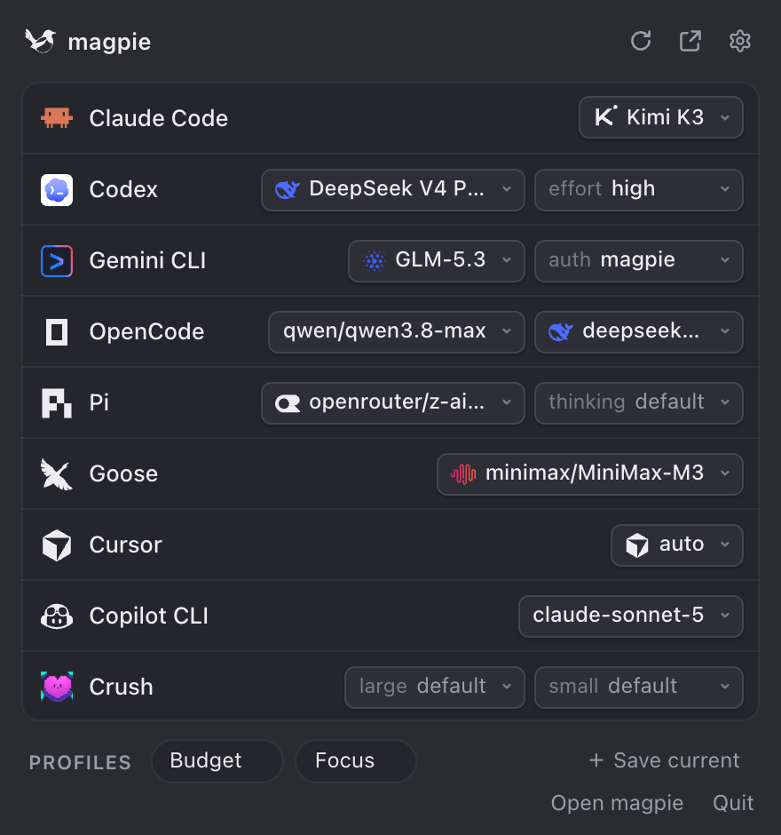
菜单栏
每个 Agent，各用各的模型。
每个 Agent 在用什么，一眼就能看清。点一下就能换；magpie 只改写那个 Agent 配置里你改动的那一项，下次会话即生效。
- Codex 的
/model列表里直接出现 DeepSeek，推理强度也对得上。 - Claude Code 的
opus、sonnet、haiku背后换成 Kimi、GLM 或 GPT。 - 选回原生模型，magpie 会把配置原样恢复。
- 方案一次切换所有 Agent——“省钱”“专注”，随你保存。
隐私脱敏
你的密钥，厂商一个也看不到。
Agent 会把读到的东西放进提示词：一个 .env、一份配置、一段带 token 的日志。请求离开电脑前，magpie 在本地把这些值换成占位符，回复里再换回来。Agent 和你的文件里始终是真值，厂商一个也看不到。
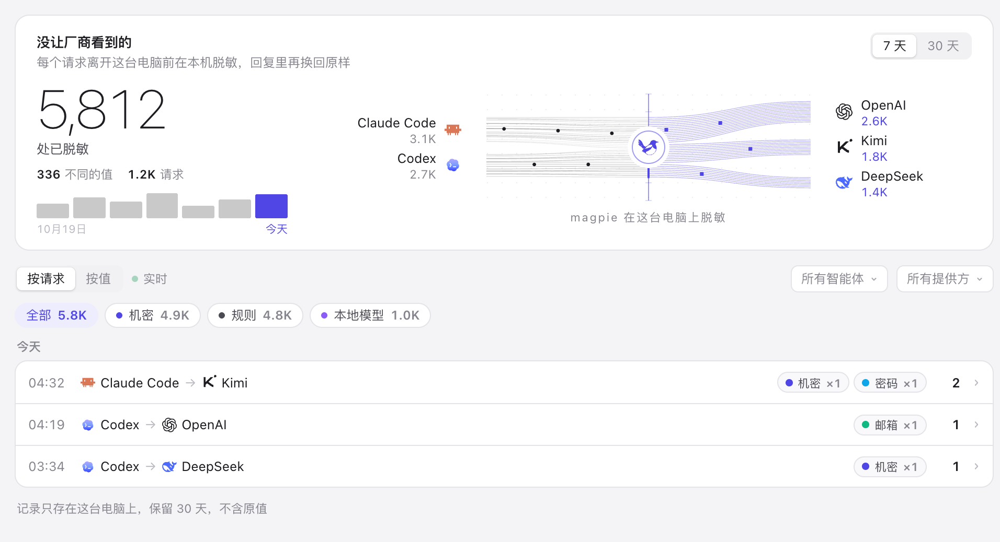
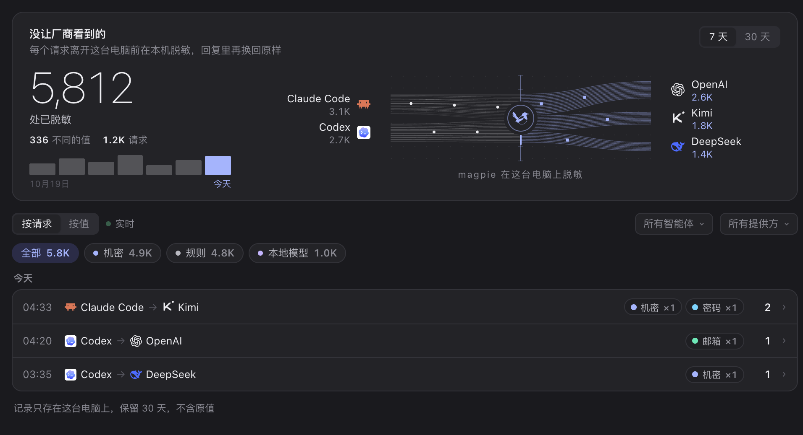
两种方式找
规则管确定的：API key、私钥、token、邮箱，以及校验位对得上的银行卡号和证件号。需要的话，再加一个在这台电脑上运行的模型，找规则找不到的人名、地址和密码。
处处换回
值变成 {{API_KEY_k3v9x2mq}} 这样的占位符。回复里的占位符都换回原值，流式文本和工具调用也算，所以 Agent 执行的命令里是真的 key。
什么都不坏
同一个值每次的占位符都一样，对话上下文、提示词缓存和 thinking 签名都不受影响。
从不落盘
原值只在内存里，记录只留类型、长度和开头几个字符。脱敏运行不了时，请求会被拦下，绝不按原样发出。
不是黑箱
观测 › 脱敏 列出它改过的每个请求，厂商实际收到了什么，左右对照。
你说了算
模型只看到占位符，看不到值本身，所以针对某个值的任务要把它加进「从不脱敏」。遮哪些、加自己的词，或者改成只提醒、直接拦截，都由你定。
订阅共享
你付费的订阅，每个 Agent 都能用。
在某个 Agent 里登录过？这个登录就成了一个供应商，它的模型会出现在其他所有 Agent 的选择器里——不复制任何东西，不用粘贴密钥，令牌按那个 Agent 自己的方式刷新。
用 Claude Code 的登录驱动 OpenCode、Pi 或 Goose：claude/claude-sonnet-5。
用 Codex 的登录在 Claude Code 里用上 GPT：codex/gpt-5.5。
你的 Copilot 席位可以服务任意 Agent：copilot/claude-sonnet-4.5。
智能路由
每轮对话用对模型，额度永不断供。
写下每个模型的用途——“简单提问”“编写或修复测试”——每轮对话开始时，一个小而快的模型告诉 magpie 这轮属于哪一类：这一轮就交给对应的模型，它的工具轮次也留在那里。原理说明。再把你所有的密钥和订阅都加进来——几个 Claude、ChatGPT、Copilot 或 Grok 账号，同一厂商的多个密钥——全部打开。每个请求由 magpie 挑选该答的账号；某个答不了，下一个会在你的 Agent 看到错误之前接上。
按意图：每轮对话开始时，问一次小而快的模型（路由组的分类模型）这条消息属于你哪条规则的意图。这一轮交给那条规则的模型，之后的工具轮次也留在那里，不再重新询问。
- claude-opus-5-5 Claude Max第一个 · 规则都不匹配时用它
- deepseek-v4-flash DeepSeek意图 · 简单提问
- glm-5.3 智谱 GLM意图 · 编写或修复测试
Claude Code 每轮都发给同一个模型名——一个 magpie 路由组。看每条消息去了哪里。
看重置时间
最先重置的账号先用——它剩下的额度到重置时就作废了。只要额度还宽裕，请求就一直交给它，提示词缓存也保持温热。
余额用完
余额耗尽的密钥歇半小时，请求转给还付得起的那个。
限流与配额
被厂商限流的账号，按厂商要求的时长跳过——依据它的 Retry-After 和重置响应头，不瞎猜，也不硬撞。
故障转移
出错的账号先退下一分钟，每再错一次就退得更久；请求会在回复的第一个字节到达你的 Agent 之前，换到下一个账号重试。
供应商
粘贴密钥，就配好了。
二十个预设——模型厂商、中转服务和本地服务器。magpie 会问每家厂商提供哪些模型，所以今早刚发布的模型，下次刷新就出现在每个选择器里。密钥只留在 magpie 里，Agent 永远看不到。
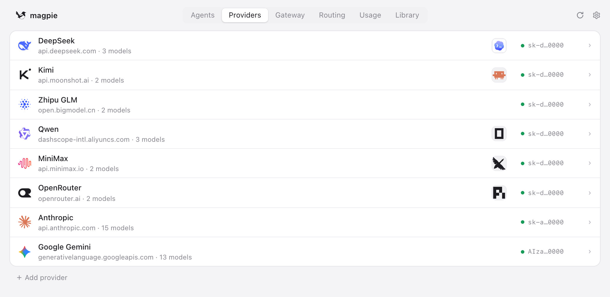
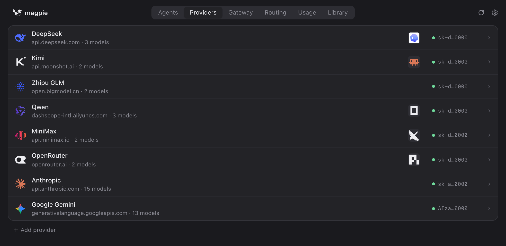
细节
小巧、细致、不打扰。
精准修改配置
settings.json、config.toml、config.yaml 里的注释、顺序和缩进都原样保留，写入是原子的。
小巧、原生、开源
Mac 上下载约 15 MB，基于系统 WebView。没有 Electron，不需要运行时。MIT 许可，源码在 GitHub。
不读 shell 里的密钥
magpie 从不读取环境变量里的 API 密钥。你添加了什么，它就用什么。
任何客户端都能接
凡是能设置 base URL 的都能用：OPENAI_BASE_URL、ANTHROPIC_BASE_URL、GOOGLE_GEMINI_BASE_URL。
按 Agent 统计用量
经过网关的每个 Agent、每个模型的 token、缓存命中和费用。
自动更新
新版本在后台悄悄下载，重启时安装。Mac 版经过签名和公证。
终端
还有 TUI 和 CLI。
同一个应用，在终端里用。安装脚本把 magpie 命令放进 ~/.local/bin，把应用放到该放的地方：Mac 上是 /Applications，Linux 上是应用菜单。
curl -fsSL https://usemagpie.ai/install.sh | sh# 添加供应商 magpie provider add deepseek sk-… # 预设只需要密钥 magpie provider add moonshot sk-… magpie provider add ollama # 本地服务器不需要 # 给 Agent 换上第三方模型 magpie codex deepseek/deepseek-v4-pro magpie claude moonshot/kimi-k3 magpie gemini zhipu/glm-5.3 magpie opencode claude/claude-sonnet-5 # 在 OpenCode 里用你的 Claude 订阅 # 一个模型，多个供应商 magpie group add opus models=claude/claude-opus-5-5,copilot/claude-opus-5.5 routing=order magpie claude group/opus magpie ls # 每个 Agent 和它的模型 magpie save work && magpie use work # 方案 magpie tui # 在终端里用完整的应用
每个 Agent，每个模型。
免费、开源、原生。支持 macOS、Windows 和 Linux。